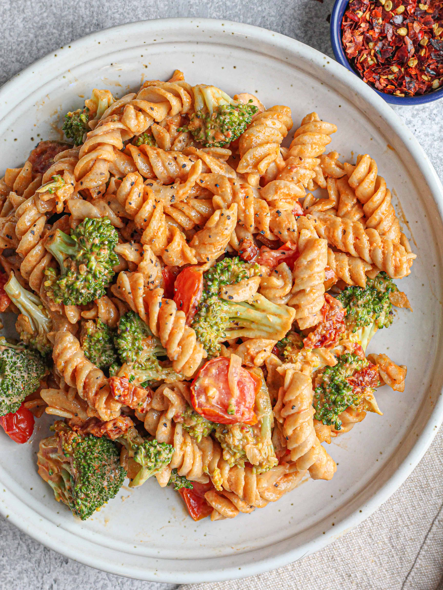

Home
Marinara Pasta with Broccoli Recipe

Description
This pasta is meant to be an easy and quick meal. It will provide you with
carbohydrates and nutrients. It can be made with any type of pasta, marinara
sauce, and broccoli. For the equipment, you only need a pan, stove, and something to stir with.
This recipe is for anybody looking for a fast, yet nutrious meal.
Ingredients
- 1 cup Broccoli
- Water
- 1 1/3 cup Pasta (any type)
- 1/3 cup Marinara Sauce
- 1 tablespoon Sugar
Steps
- Add Broccoli to pan
- Add water to pan: Make sure the broccoli is fully submerged by water
- Wait until water boils
- Lower heat and add pasta: Make sure pasta is submerged by water. Set to medium-heat
- Wait for 8 minutes: Look at the instructions for your pasta. Adjust
the 8 minute mark based on the time your pasta will take to cook
- Get rid of water and set aside brocolli and pasta
- Add Marinara sauce and sugar: Make sure the stove is using low-heat
- Mix sauce and sugar well for 4 minutes
- Toss the broccoli and pasta in pan
- Mix everything for 2-5 minutes: Stove should be on low-heat